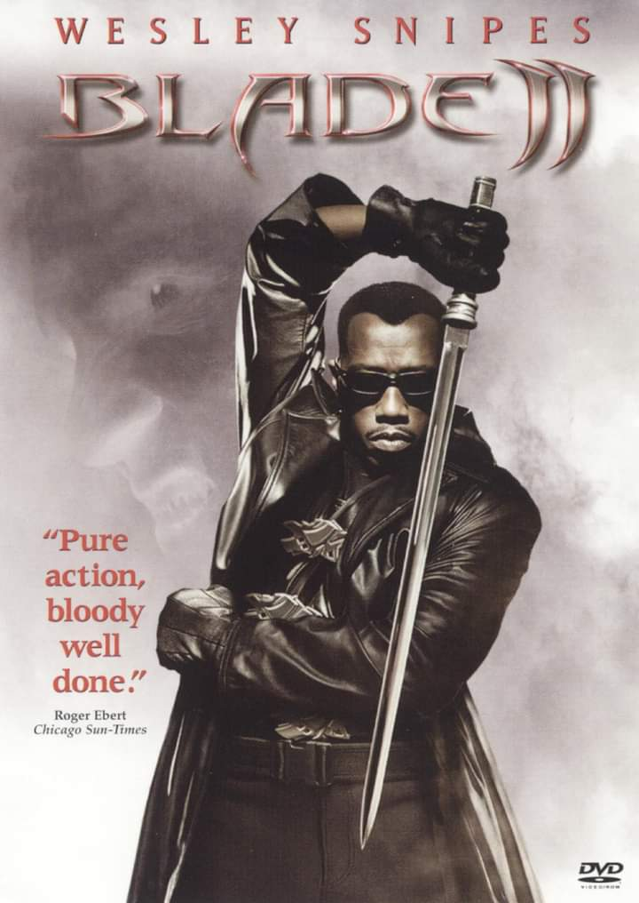

| BLADE II | CAPTAIN AMERICA:THE FIRST AVENGER |
|---|---|
|

Synopsis The Reaper is a vampire so consumed with an insatiable thirst that they prey on vampires as well as human populations. Blade's team and the Bloodpack are the only line of defense which can stop the Reapers from wiping out both the vampire and the human population. |

Synopsis In 1942, Steve Rogers is frustrated at being rejected yet again for military service. Rogers undergoes an experiment and his body is enhanced into the maximum human potential. When his comrades need him, Rogers goes on an adventure that truly makes him Captain America. |
| A Good Day to Die Hard | The Equalizer |
|
Synopsis Iconoclastic, take-no-prisoners cop John McClane, for the first time, finds himself on foreign soil after traveling to Moscow to help his wayward son Jack - unaware that Jack is really a highly-trained CIA operative out to stop a nuclear weapons heist. . |
Synopsis Robert McCall is a former special service commando who faked his own death to live a quiet life. He finds his desire for justice reawaken when he saves a young girl from a brutal Russian gang. McCall becomes the go-to man when the helpless require the kind of vengeance they would never find without his skills. |
| The Haunted Mansion | Rough Draft |

After some spooky adventures, the family manages to save the manor and Sara. They also learn a valuable lesson about togetherness from a talking head in a crystal ball. |
A struggling freelance writer stumbles across a serial killer in action. The two strike up a bizarre partnership to document the killer's motives and handiwork. A possessed detective with his own personal demons tries to solve the crimes of the transvestite night-lifters. |
| Ripper Untold | The Last Exorcism |

A detective and a medical examiner join forces to solve a series of horrific murders in Victorian London - but one of them harbours a deadly secret. |

Cotton Marcus is a Baton Rouge based preacher, much of his work, like his father, carrying out exorcisms. After the accidental death of a supposedly possessed ten year old at the hands of another exorcist, Cotton admits to himself that he has never really believed in demons and thus possessions. |
| Diary of a Wimpy Kid | Zookeeper |

"The Wimpy Kid's Diary" is written by Greg Heffley, who hates middle school. "It's NOT a diary, it's a journal!". Each page details family trials and tribulations, and (would-be) schoolyard triumphs. |
A group of zoo animals decide to break their code of silence in order to help their lovable zookeeper find love, without opting to leave his current job for something more illustrious. |
| Beerfest | Max 2: White House Hero |

Brothers Jan and Todd Wolfhouse travel to Munich to fulfill a family tradition. Their contact brings them to a secret beer competition, the Beerfest. The German branch of their family accuse their great-grandmother of being a prostitute. But the team is ready for the tough dispute. |

Secret Service dog Max is sent |
| Me Before You | The Notebook |

Lou Clark is about to lose her job at The Buttered bun tea shop. Will Traynor knows a road accident has taken away his desire to live. Lou doesn't know she's about to burst into his world in a riot of color. Neither of them know they're going to change each other for all time. |
In the late 1930s, wealthy Allie Hamilton is spending summer vacation in Seabrook. Local worker Noah Calhoun meets Allie at a carnival and they soon fall in love. Noah writes 365 letters to Allie, but her mother Anne Hamilton does not deliver them to her daughter. |
| After we collided | Marry Me |

After We Collided - Tessa and Hardin were on the path to making things work. When a bombshell revelation is dropped about their relationship, Tessa is beside herself. Is Hardin really the man she fell madly in love with despite his angry exterior? Or has he been a stranger all along? |

Kat Valdez and Bastian are about to be married in a ceremony streamed across multiple platforms. Kat learns seconds before the ceremony that Bastian has cheated on her with her assistant. Can two people from such different worlds bridge the gulf between them and build a place where they both belong?. |